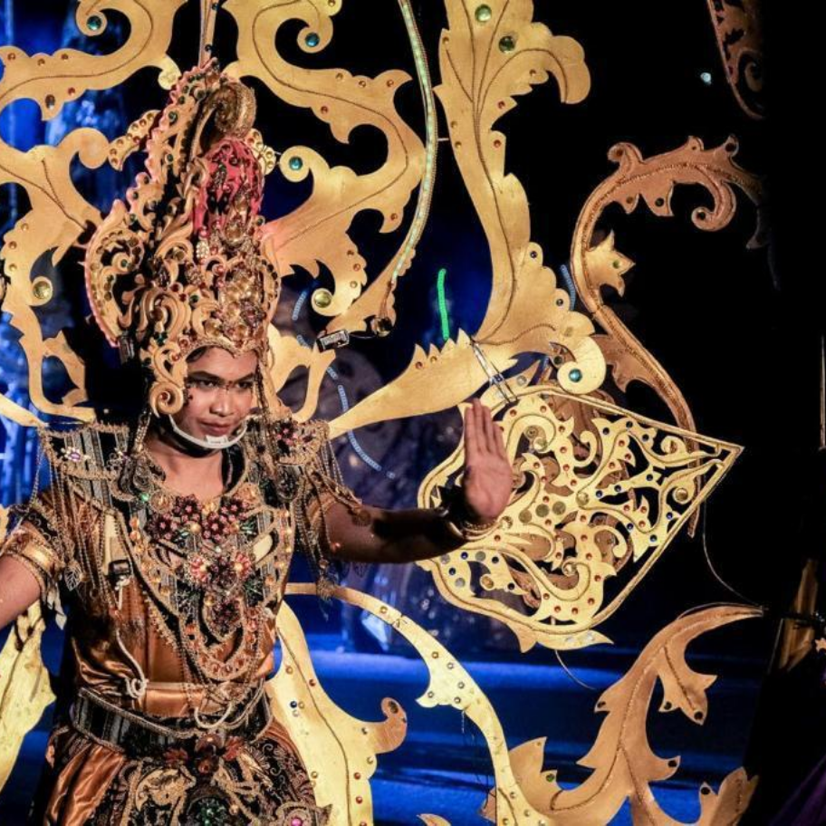
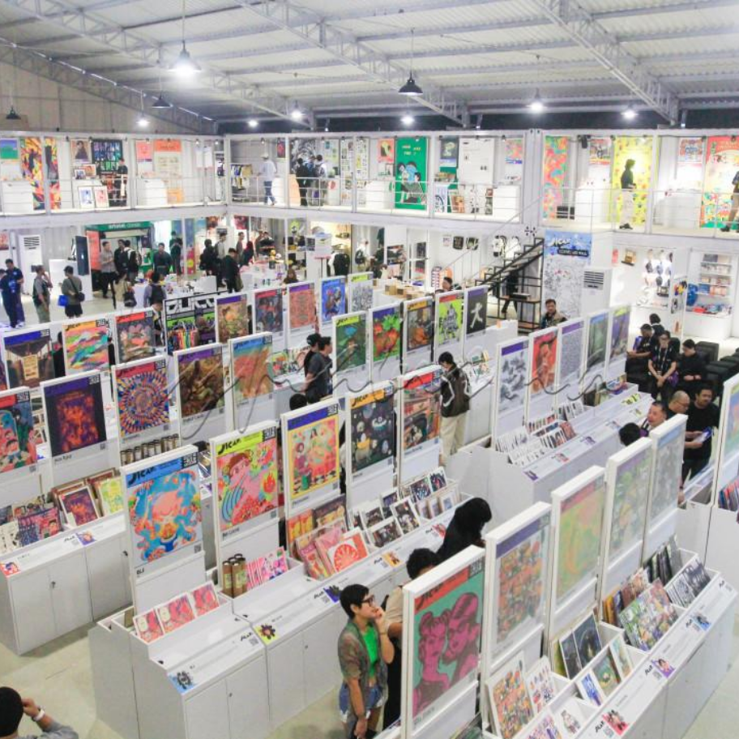
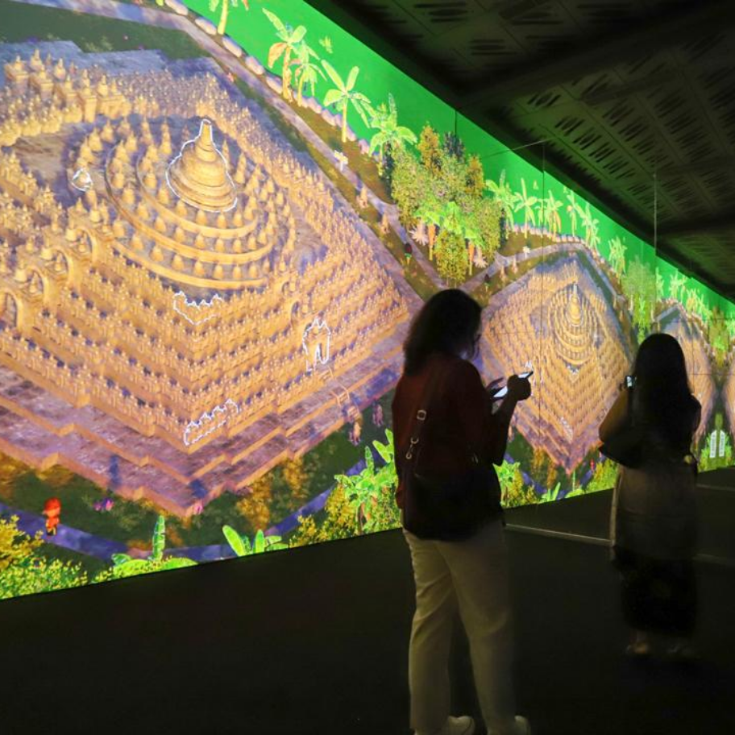

Ambang Threshold
BAIK Jakarta is pleased to present Ambang / Threshold, a solo exhibition by FX Harsono
Step into a world of exhibitions where art, tradition, and contemporary culture meet to tell the stories of Java.
BAIK Jakarta is pleased to present Ambang / Threshold, a solo exhibition by FX Harsono

Contemporary art and design exhibition exploring art, design, society, and everyday life.

A night carnival inspired by wayang traditions celebrating cultural identity through costumes and music.

Illustration, creative showcases, and artist activities connecting visitors with independent artists.

A celebration of West Java’s cultural diversity through performances, music, and culinary experiences.

An immersive experience inspired by Borobudur’s heritage and history through storytelling.